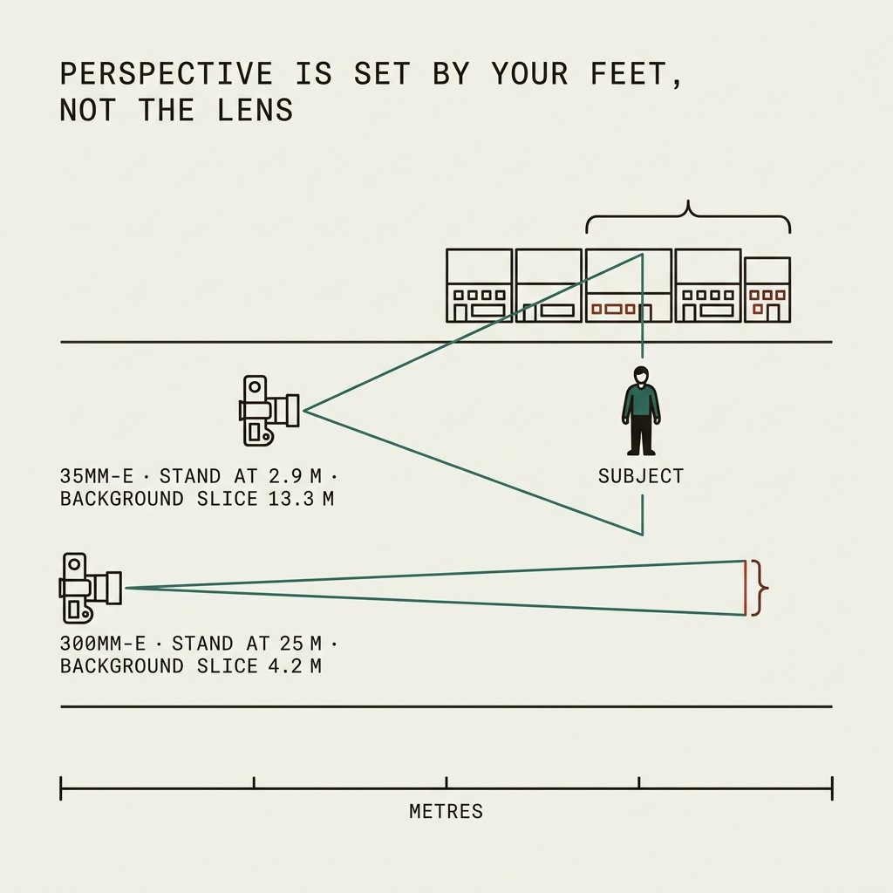
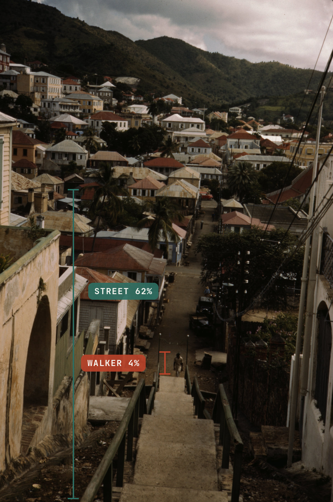
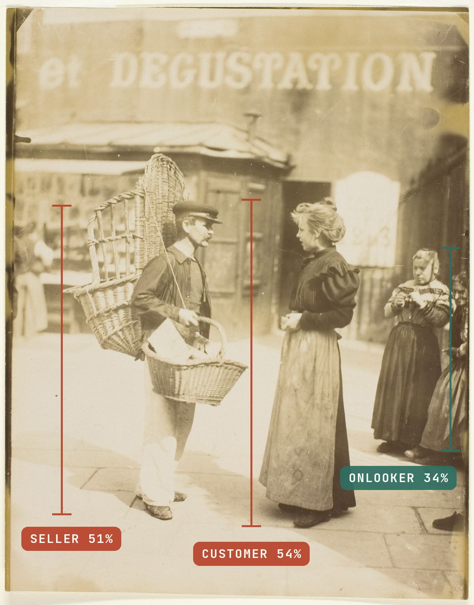
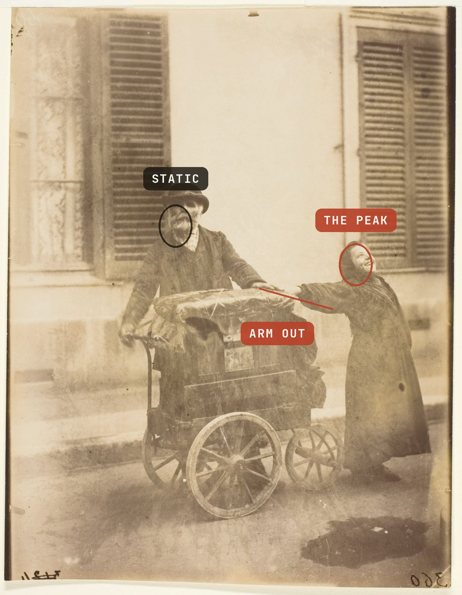
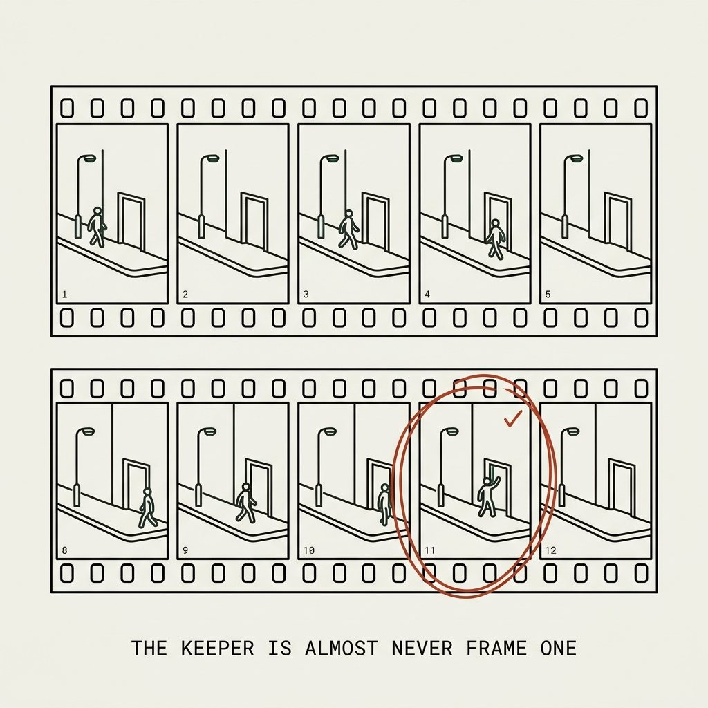
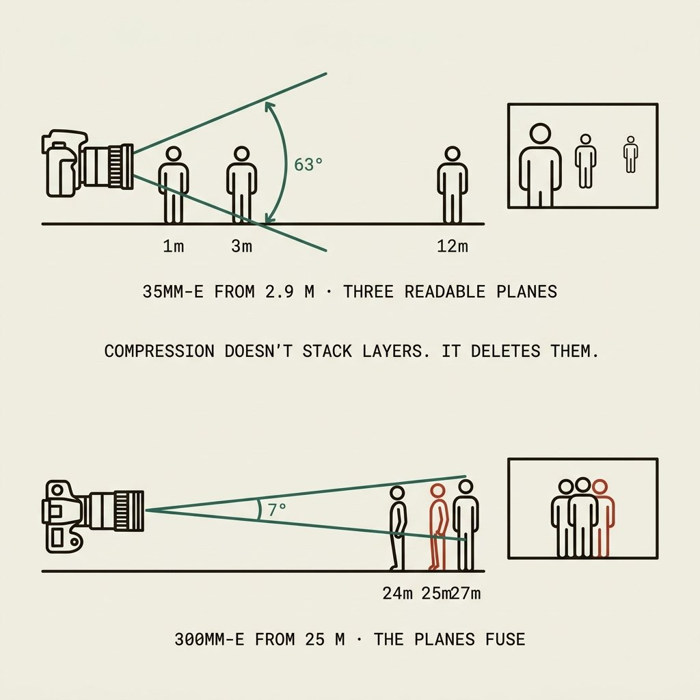
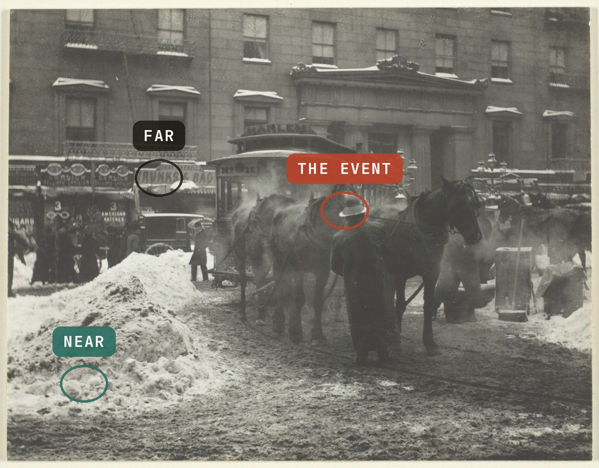

Distance is the medium
Perspective belongs to where you stand, not to the lens. A street frame shot from across the road on a telezoom carries the geometry of a spectator — and viewers feel it even when they can’t name it.
X100VI §Focus — zone focusing · OM-1 §Glass — the 12–40
The optics first: perspective — the size relationship between a subject and what’s behind them — is fixed by camera-to-subject distance and nothing else. The focal length only decides how much of that perspective gets cropped into the frame. Stand 2.9 m from a person with a 35mm-e lens and someone ten metres behind them renders at 23% of their size: the person dominates, the street recedes, the viewer stands where you stood — inside the scene. Back up to 25 m with a 300mm-e and that same background figure renders at 71% of the subject’s size: everything flattens into one plane, and the frame announces that the photographer was somewhere else entirely.
| Lens | You stand at | Background slice (10 m back) | Background renders at |
|---|---|---|---|
| 28mm-e | 2.3 m | 15.9 m wide | 19% of subject |
| 35mm-e | 2.9 m | 13.3 m wide | 23% |
| 50mm-e | 4.2 m | 10.2 m wide | 29% |
| 150mm-e | 12.5 m | 5.4 m wide | 56% |
| 300mm-e | 25.0 m | 4.2 m wide | 71% |
Read the middle column again. At 28–35mm-e the frame swallows a 13–16 m slice of the world behind the subject — context arrives for free, and the composition problem is exclusion. At 300mm-e the frame holds a 4 m sliver — context is gone, and what remains is a specimen on a compressed stage. That is why long-lens street frames read as observations of people rather than photographs with people: the geometry itself is third-person.

The person is held at the same size in the frame; only your feet and the lens change. Watch the background figures grow from set-dressing into a wall — that growth is what a viewer reads as “shot from across the street.” Arrow keys work on the slider.
The archive shows both geometries, made by the same government project within a few years of each other — one frame from inside the scene, one from far above and away. Neither is wrong. Only one is a photograph of a person.


The kit answer
The general rule: a fixed wide-normal lens removes the zoom decision entirely, leaving your feet as the only variable — which is the variable that needs training. This site’s instance of the rule: the X100VI (fixed 35mm-e, leaf-shutter quiet) is the street camera; the alternative is the OM-1 with the 12–40 held at 14–25mm (28–50mm-e). The 40–150 stays home. Not because long lenses are immoral — Lesson 08 has the honest counterexample — but because a telezoom in the bag lets the composing-from-across-the-road habit keep breathing, and a habit dies only when the option does.
Prefocus kills the last excuse for hanging back. Zone focus on a 35mm-e APS-C at f/8: set focus to 3.3 m (the hyperfocal) and everything from 1.7 m to infinity is acceptably sharp; set it to 2.5 m and the zone runs 1.4–10 m. On Micro Four Thirds at 17mm f/8, focus at 2.5 m holds 1.2 m–∞. Autofocus latency stops mattering when nothing needs to focus — the same logic behind Matt Stuart’s film-era practice of f/11, 1/500, and two memorized focus positions.
The canon confirms the geometry with feet, not theory. Cartier-Bresson worked a 50mm and found the 35 “extremely difficult” for his compositions; Winogrand carried two bodies with 28mms after rejecting the 21 for distortion; Gilden shoots a 28 with a flash at arm’s length, invoking Capa’s line — “If your pictures aren’t good enough, you’re not close enough.” Meyerowitz is the instructive conversion: he started on a 50, felt it choking him within a month, and switched to a 35 — “I can see now!” Every one of them lives inside 28–50mm-e, which is to say: inside conversational distance. Nobody’s canon includes a 300.


Before raising the camera, close half the distance you think is right. If the frame gets uncomfortable, it is starting to be a street photograph. The lens restriction is the training wheel; the reflex is the goal.

The person is the photo
The landscape reflex is to build a stage and wait for a figure to complete the composition. Street that holds a viewer works the other way: the person is chosen first, with intent, and the environment answers. The test — if this person were someone else, would the photo change?
Run the test on the two frames below. In each, the answer is no — replace the subject and there is no photograph left. That is what subject-first looks like in practice: not portraiture, but a specific person doing a specific thing that the photographer chose, with the street arranging itself around that choice.


There is a failure subtler than missing the person — finding a genuinely good subject and then treating them like scenery: photographing a character from spectator distance, recording the costume and missing the man. The eye does the hard part; the feet refuse the second half. When a remarkable subject draws the same flat response as a passer-by, the subject was never the problem. The distance was.



Pick the person first. Not “a person” — this person, because of the hat, the gesture, the load they’re carrying, the way light lands on them. Then let the background resolve second. If anyone could replace the subject, you built a stage again.


The peak, and pressing on meaning
A street photograph peaks: there is a half-second when gesture, glance and geometry converge, and the frame is worth ten times the frames on either side. A frame that would look the same shot three seconds earlier or later is timing-agnostic — the definition of pressing on presence instead of meaning.
In practice §03 — blur has two causes
The “decisive moment” is a phrase Cartier-Bresson never chose — his 1952 book was Images à la sauvette, “images on the run”; the English title was the American publisher’s. What he actually defined is more useful: the simultaneous recognition, in a fraction of a second, of an event’s significance and of the precise organization of forms that expresses it. Moment and geometry converging — not moment alone, not geometry alone. A photographer arriving from landscape brings the second half already trained.
The instructive part of his most famous frame, Behind the Gare Saint-Lazare (1932), is how it was made: a pre-seen stage — puddle, ladder, ripples — shot through a gap in a plank fence so narrow it partially blocked the lens, fired essentially blind as the man leapt, and then cropped (by the no-crop purist himself) to remove the intruding fence. He hadn’t even noticed the leaping-dancer posters echoing the jump until afterwards. No superhuman reflex anywhere in that story: a stage, a bet on an arriving moment, and honesty in the edit. The test it leaves for any frame: does the picture collapse if the moment moves a half-second either way? If nothing collapses, nothing peaked.

Anticipation is arithmetic, not talent
Measured mean simple visual reaction time in adults is about 230 ms (Woods et al. 2015, n ≈ 1,470), before adding shutter lag. A person at walking pace covers ~35 cm in a quarter second; a cyclist covers a metre and a half. So a peak gesture cannot be reacted to — only anticipated. Every decisive photograph was pressed before its moment, by a photographer who watched the approach and bet on the convergence. This is why the pre-composed stage isn’t the enemy — it is half the method. The missing half is choosing the moment the stage is for, then firing ahead of it.

Practical consequences, all cheap: prefocus the zone (Lesson 01) so shutter lag is the only latency; watch hands and feet, not faces — gesture telegraphs sooner than expression; and when a scene has a repeating rhythm (a crossing light, a doorway, a shaft of sun), the rhythm is the anticipation, free of charge.


Before pressing, name what is about to happen — “she’ll reach the light,” “he’ll look up,” “the dog will pull.” If you can’t name an about-to, you are photographing presence — and presence is the one thing every flat street frame already has.
Fishing, not hunting
Working a scene for 2–5 frames and moving on is hunting. Street winners come from standing in one worked spot for 20–40 frames while the scene re-deals itself — fishing. The contact sheets of the masters are the proof: the keeper sits in a thicket of near-misses that paid for it.
In practice §07 — working a scene
The published Magnum Contact Sheets (139 sheets, 69 photographers) put numbers on it. René Burri exposed eight rolls in one Havana interview for the Che portrait everyone knows. Richard Kalvar worked a Rome piazza and got his picture on the last frame of the roll. Bruce Gilden says he can go fifty rolls without a good photograph. Robert Frank shot 767 rolls for The Americans and published 83 frames — a 0.3% keep rate. The name for the method is on record too: Matt Stuart calls it fishing — compose the stage, then wait for the street to deal into it. Alex Webb, who stands in Caribbean heat for hours to stack four elements into one frame, put the whole genre in seven words: “Street photography is 99.9 percent about failure.”


David Hurn’s On Being a Photographer describes what the best contact sheets look like: the photographer commits to a position, then frames build to a crescendo where a gesture or arrangement signals the picture — or the sequence dies because the event collapsed. His own method for a single beach photograph: fix the angle, find the precise distance, then shift six inches sideways, shooting frames, because only the contact sheet shows which one aligned. The counter-case is real and worth knowing: Martine Franck got four frames of a boy in a hammock before he noticed her and the picture died. Some windows are forty frames wide, some are four — the discipline is staying until the window itself closes, not until boredom arrives.
Why 2–5 frames feels finished (and isn’t)
The landscape instinct says a composition, once found, is done — the mountain will not improve on frame six. That instinct is correct for mountains and wrong for streets: the composition is only the stage, and on a street the cast changes every ten seconds. Two frames sample two casts from a distribution; forty frames sample the distribution.
The discipline has a debrief side too. Reviewing forty frames from one spot teaches more in ten minutes than forty spots teach in a month, because every variable is controlled except the one that matters — the moment. That review is where “what was I waiting for?” gets an answer in your own handwriting.



One block, one hour, one hundred frames. The urge to move on arrives around frame four — treat it as the signal that the actual work is starting, not ending.
Layers: the loaded frame
A layered street photograph is several photographs that agree: one event in the foreground, another in the middle distance, a third on the far plane — each readable, none colliding. Layers are what the wide lens’s 13-metre background slice is for.
This is Alex Webb’s territory. His frames stack three and four elements deep — a shoulder entering one edge, a dog mid-frame, children against a far wall — and every plane holds something deliberate. The method behind it is the sum of the last four lessons: wide lens (the deep slice), close position (the planes separate), a worked spot (the elements accumulate), and patience for the half-second when all of them peak at once. Which is why he calls the genre 99.9 percent failure: the more planes you load, the more ways the frame can miss.
The optics make layering a wide-lens monopoly. At 35mm-e from 2.9 m, a face at 1 m renders three times the size of a face at 3 m — the planes separate by size, and the eye reads depth without being told. At 300mm-e from 25 m, a face at 24 m and a face at 27 m render within a few percent of each other: the planes fuse, and layering is geometrically impossible. Compression doesn’t stack layers; it deletes them. And zone focus at f/8 (Lesson 01) keeps two or three planes acceptably sharp at once, so the layers you compose are the layers you get.


Edge discipline is the layering skill nobody sees in the final frame. With three planes live, every frame edge is cutting through something; the craft is choosing what gets cut and where. Webb’s edges amputate at joints — a shoulder, a hat brim, a door jamb — never mid-face. The rule of thumb: an edge may crop a thing, but it shouldn’t decapitate an event.



Load one extra plane on purpose. When the single-subject frame is composed, don’t press — take one step closer or sideways until something enters the foreground or resolves in the distance, then wait for both planes to peak. The keeper rate drops and the keepers get better; that trade is the lesson.

Objects: transform, don’t describe
An object photographed as it is, competently, is an inventory entry — the viewer files it and moves on. Transformation — light, angle, or abstraction changing what the thing reads as — is the only exit. Description earns polite approval; transformation gets remembered.
In practice §04 — the four properties of light
One photographer, one city, one bag: a set of competent object descriptions, and one frame where evening light turned an art-deco fire escape into pure rhythm. Audiences went for the transformation over the descriptions by roughly 40:1. The difference was never sharpness, color, or crop. It was what the light was allowed to do before the shutter opened.


The transformation levers
Three, and they compose: light (wait until light is doing something to the object — a lighting event, not an architectural one), angle (move until the object’s function disappears and its geometry remains), and abstraction (exclude every element that names the thing; what survives is shape, rhythm, color). The question at the scene is never “what is this?” — it is “what is this becoming right now, and from where?”
The thumbnail test guards the result. Whatever the object became, it must survive at 200 pixels: one shape, unmistakable, uncontested. A single subject on a busy textured field reads as texture at thumbnail size no matter how clean it looked in the finder — at that scale the texture is the subject. Before firing: name the one shape the thumbnail will show. Can’t name it — recompose.


If the caption would start with the object’s name, you described it. If the caption has to start with what it looks like instead — rhythm, ribbon, drumbeat — you transformed it. Only shoot objects the light is actively transforming; the rest are scouting notes.

Color as structure
Color earns its place in a street frame the same way a person does: by doing structural work. One saturated element anchoring a quiet field is composition; six competing hues are noise. The choice between color and monochrome is a decision about what the frame is made of — and it happens before the shutter, not in the edit.
The colour archive is small and precious: alongside 171,074 black-and-white negatives, the FSA/OWI photographers left only 1,623 colour transparencies — Kodachrome was expensive, slow, and considered unserious for documentary work. The frames that survive show color used exactly the way the later masters would use it: not as a record of what things looked like, but as structure.


Saul Leiter, shooting Kodachrome in New York from 1948 — often expired stock, partly because it was cheap — built exactly this grammar into fine art: one red umbrella against snow, a traffic light bleeding through fogged glass. A painter before he was a photographer, he composed in planes of color the way Bonnard did, and the street obliged. The full study of his method is in Lesson 08; the working rule it yields is simple: find the color first, then wait for the street to use it. The red sign is a stage (Lesson 04); whoever walks under it is the cast.
Monochrome is the same decision made in the other direction — subtraction as structure. Fan Ho’s Hong Kong is geometry and haze precisely because color would have dissolved both into travel photography; gesture and shape carry everything when hue is gone. The honest test before each outing, or each frame: is a color doing compositional work here? If yes, protect it — expose for the saturated plane, exclude competing hues, wait for the anchor. If no, the frame is already monochrome; shooting it in color just adds noise you’ll have to mute later.


Name the working color before you press — “the red sign,” “the yellow wall,” “nothing.” One nameable color: compose around it. No nameable color: think in monochrome, whatever the sensor records. Two or more fighting: walk until one wins.
Masters as data
Not inspiration — data. Fifty frames per photographer, one line per frame: single shape at thumbnail / where the moment peaks / camera distance / what got transformed. Three photographers, each of whom solved one of the problems above.
Fan Ho — the bridge from the graphic eye
Hong Kong, 1950s–60s, a Rolleiflex, and the stage-building habit done consciously. In his own words: he would find a location and stake it out — returning across days and seasons — and wait for “the suitable subject matter” to enter at the mark where light, mood and composition hit the climax he had already pictured. He knew Central Market’s light “came in so beautifully around four o’clock,” when cooking smoke and dust made the beams solid. That is the difference between his stage and the tourist’s: his stayed empty until the specific figure — right silhouette, right gait, right mark — completed the sentence, while the stage-first habit accepts whoever wanders through. “I am like a cowboy with one bullet,” he told an interviewer, “and not a machine gun.”
He was also honest about control, which matters here: Approaching Shadow (1954), his most famous frame, was posed — his cousin against a wall — and the diagonal shadow was burned in later in the darkroom. Another frame, Private, was staged with two friends. He cropped freely and called the square negative “suitable for my purpose of cropping.” A pictorialist, not a documentarian: the geometry was the instrument, the print was the truth he cared about. The study: which of his fifty frames survive with the figure removed? Almost none — that is the gap to measure.
The Fan Ho grammar was never his alone — it is what any trained eye finds when it looks down a street with the light committed. The government photographers found it on assignment, between captioned documents:


Saul Leiter — the anti-inventory
Leiter is the counterexample to every rule stated too simply. He shot street on telephotos — 85, 90, on occasion a 150mm — but pointed them at reflections, fogged glass, umbrellas, gaps between boards, using compression to stack the street into planes of color rather than to observe people from afar. The tele rule in Lesson 01 survives him: his long lens compressed layers toward the viewer; a tele pointed at a person across the road holds them away. Objects in Leiter are never described: in Snow (1960) a steamed window’s condensation is the subject and the man beyond it becomes pigment; in Through Boards (1957) construction planks blind us to all but a sliver of street. He shot Kodachrome from 1948 — often expired, partly because it was cheap, and the decayed dyes painted like the Bonnards he loved. He was a painter first, and lived in the same East Village blocks from 1952 until 2013, fishing one neighborhood for six decades. The world only caught up at Early Color (Steidl, 2006), when he was 82. “I don’t have a philosophy,” he said. “I have a camera.”
The Magnum contact sheets — what surrounds a keeper
The published sheets are the honest teaching document in street photography: the boring frames around the famous one, the photographer circling, re-approaching, waiting out wrong pedestrians. The keeper is almost never frame one — Kalvar’s was the roll’s last. And the cautionary tale sits in the same tradition: Winogrand died leaving ~2,500 rolls undeveloped and thousands more unedited — volume without the contact-sheet review is just hoarding moments. The study here is of sequences, not photographs: for a chosen sheet, count the frames, plot where the keeper falls, write one line on what changed between frame one and it. Then hold your own 2–5-frame scenes against that count.
Where the record starts


The rubric, per frame, one line: shape@thumbnail · peak · distance · transformation. Fifty Fan Ho, fifty Leiter, ten Magnum sequences. The output isn’t notes — it’s recalibrated defaults.
The living bar
Lesson 08 studies the dead for mechanism. This one names the living, because they are the actual standard — people making street photographs now, into the same flood of images you are, where nothing is interesting merely for existing.
Their work is in copyright, so it is linked rather than shown — to the photographer’s own site, their gallery, their publisher or their museum wherever one exists. Study them the way Lesson 08 asks — the rubric, one line per frame — but hold these to the harder question the archive cannot answer: would this stop me if I scrolled past it today?
Working distance → Lesson §distance
- Bruce Gilden New York
- Steps to arm’s length in front of an oncoming stranger and fires an off-camera flash held out to the side — the face hard-lit, the background gone to black. Facing New York, Coney Island · view
- Mikiko Hara Tokyo
- The same proximity, the opposite posture: a waist-level 1930s Zeiss Ikonta fired without looking through the viewfinder, close to strangers on trains. Change (Kimura Ihei Award) · view
- Akinbode Akinbiyi Lagos · Berlin
- Walks for hours with a twin-lens Rolleiflex, composing down into the hood rather than at the subject — unthreatening, and every frame the same square. Sea Never Dry, African Quarter · view
- Nick Turpin London
- The counter-argument to Gilden: a long lens across a dark street into a lit bus, condensation and reflection becoming the surface. Distance producing more intimacy, not less. On the Night Bus (2017) · view
- Julia Coddington Austinmer, NSW
- Daylight flash on close subjects; her own series titles are the method. Founded Unexposed Collective for Australian women and non-binary street photographers. Flash It!, Close Enough · view
- Daniel Arnold New York
- Walks for hours with the simplest camera he owns, shooting from belly level while appearing not to photograph. Volume and endurance; the selection happens in the edit. You Are What You Do (2025) · view
The person is the photo → Lesson §subject
- Narelle Autio Adelaide
- Gets in the water with the swimmers and shoots from below or inside the breaking wave — a body as weightless silhouette against nothing but bubbles. The Seventh Wave, Coastal Dwellers · view
- Ketaki Sheth Mumbai
- Black-and-white film in her own city across decades, so one tonal language holds fifteen years of unrelated encounters together. Bombay Mix: Street Photographs · view
- Yolanda Andrade Mexico City
- One city, one set of recurring civic rituals, returned to for forty years — until the change itself becomes the subject. Pasión Mexicana, Enigma · view
- Debrani Das Kolkata
- Works her own city’s crowded ritual spaces as street, staying for the unpredictable candid rather than the ceremony. Banaras Chronicles · view
The peak → Lesson §peak
- Joel Meyerowitz New York
- Moves with the flow of a crowded sidewalk and fires when several separate pieces of street business peak at once — accepting a busy frame over an isolated subject. New York City (1974), Cape Light · view
- Dimpy Bhalotia London · Mumbai · Varanasi
- Shoots street entirely on the phone in her pocket, in black and white, releasing only at the apex of a body in mid-air. Flying Boys (2020) · view
- Nils Jorgensen London
- Thirty years of press reflexes turned on the ordinary street incident: no setup, no waiting — recognising an absurd alignment half a second before it dissolves. Nothing Like Something · view
Fishing, not hunting → Lesson §working
- Trent Parke Adelaide
- The clearest example alive. The Camera is God is hundreds of frames of one Adelaide corner, exposed for the lit slot between buildings so everything else goes black. The Camera is God, Minutes to Midnight · view
- Matt Stuart London
- Picks a clean graphic backdrop, gets low, pre-focuses, and stays half an hour or more letting passers-by walk into the frame he already built. Trafalgar Square, 2006 — the pigeon frame · view
- Maciej Dakowicz Cardiff · Poland
- Photographed the same few hundred metres of one street, on the same nights of the week, for six years — until he knew where incidents happened before they happened. Cardiff After Dark (2012) · view
- Melissa O’Shaughnessy New York
- In her own words: “I’ll often plant myself there for 30 or 40 minutes and let the beautiful chaos of New York City come to me.” She names the corner: 42nd and 5th. Perfect Strangers (2020) · view
- Alejandro Cartagena Monterrey
- One pedestrian overpass, one highway, camera pointed straight down, the same frame hundreds of times — until the variations are the picture. Carpoolers · view
- Rohit Vohra New Delhi
- Finds one location where light and texture already work, then stays and keeps failing at it, accepting a very low hit rate. Stolen Moments · view
Layers → Lesson §layering
- Alex Webb Brooklyn · the border · the Caribbean
- The reference case for the whole lesson: hard tropical light, waited out until unrelated things occupy separate depth planes of one frame. The Suffering of Light, La Calle · view
- Vineet Vohra New Delhi
- Builds in depth — foreground object, mid-ground gesture, background light — then returns until all three align. First Indian Leica Ambassador. Serendipity · view
- Gustavo Minas Brasília · São Paulo
- Shoots through reflective surfaces — station glass, puddles, windscreens — so two scenes stack in one frame, camping on the same transit hub until the light works. Maximum Shadow Minimal Light · view
Objects transformed → Lesson §objects
- Martin Parr New Brighton · Bristol
- 1952–2025. Banal leisure shot close with daylight fill-flash and saturated colour, often dropping to macro on the food or the litter until an object carries the whole social observation. The Last Resort (1986) · view
- Jesse Marlow Melbourne
- Hard Australian light, framed so an ordinary object reads for a second as something impossible — then lets the viewer resolve it. Laser vision; Don’t Just Tell Them, Show Them · view
- Pau Buscató Barcelona
- Hunts the visual coincidence — two unrelated things overlapping for a fraction of a second into one impossible object — and accepts that it can take years at the same spot. There Is No Plan · view
- Tavepong Pratoomwong Bangkok
- Changes point of view rather than location: puts an object between himself and the subject and waits for the two planes to fuse. Tree man, Headless Dog, Ant man · view
- Jonathan Higbee New York
- Scouts a graphically strong billboard, then returns and waits for a passer-by to align with it — “up to a few hours a day for a week.” Coincidences · view
Colour as structure → Lesson §chroma
- Shin Noguchi Kamakura · Tokyo
- Fully candid but never hidden — stands in the open, directs nothing, and waits for the unguarded gesture inside an already-composed colour frame. In Color In Japan · view
- Siegfried Hansen Hamburg
- Frames road markings and colour blocks as a flat near-abstract Mondrian, then waits for one figure to enter and supply scale. The human is the smallest element, not the subject. Hold the Line · view
- Sandra Cattaneo Adorno Rio de Janeiro
- Shoots into low golden light on one beach until bodies reduce to chiaroscuro shapes. Began photographing at sixty. Águas de Ouro · view
- Ismail Ferdous Cox’s Bazar · New York
- Documentary by training; treats one enormous public beach as his street and shoots it in saturated colour over five years. Sea Beach (Leica Oskar Barnack Award 2023) · view
- Alan Schaller London
- The negative case: exposes for the highlight so shadow goes fully black, and composes with the resulting shape. Metropolis · view
Where the line is → Lesson §ethics
- Vivian Maier Chicago
- 1926–2009. Rolleiflex at waist level, framing strangers from two feet without raising a camera to her face. Also the hardest ethics case here: ~100,000 negatives, unpublished in her lifetime, discovered at auction and printed and sold by others months after she died. Street Photographer, The Color Work · view
- Tatsuo Suzuki Tokyo
- Very close, wide, high-contrast, bodies cropping at the edge. In 2020 Fujifilm pulled a launch video of him shooting into strangers’ faces; in 2025 he said the promo “wasn’t even how I photograph people” and that he does not photograph people who object. Contested, which is why it teaches. Friction / Tokyo Street · view
- Joana Choumali Abidjan
- Photographs a traumatised public place quietly, then embroiders by hand into the print. First African winner of the Prix Pictet. Ça va aller · view
- Sooni Taraporevala Mumbai
- Photographs her own community from inside it across forty years — which, as Raghu Rai noted, cuts out the exoticism an outsider brings. Home in the City, PARSIS · view
- Gulnara Samoilova New York
- Photographs openly rather than covertly: makes no secret of the camera, blends in, waits. Founded Women Street Photographers. Women Street Photographers (ed., 2021) · view
Where the genre actually lives now
One thing the standard reading lists get wrong. The canon of street photography is taught as a Franco-American line — Cartier-Bresson to Frank to Winogrand to Webb — and the diversity conversation grafted onto it in the United States runs almost entirely between Black and white, which leaves photographers from South Asia, the Arab world and Southeast Asia out of the discussion altogether. That is a poor description of the present. The most active street scenes, competitions and collectives right now are substantially Asian: APF Magazine out of Delhi, founded by the Vohra brothers in 2011; Street Photo Thailand, whose 365-day project produced Tavepong Pratoomwong; the Kolkata and Mumbai scenes behind Debrani Das and Ketaki Sheth; the Japanese lineage running from Moriyama through Shin Noguchi and Mikiko Hara.
Read that as a statement about craft rather than representation. Those scenes are productive for the reason Lesson 10 gives — the cities are dense, commerce is on the pavement, and public life happens outdoors — so the photographers working them get more repetitions per year than anyone in a car-first Western city possibly can. If you want to know what the current standard looks like, that is where to look, and the names above are in this list on the same footing as the Magnum ones, not appended to them.
Where to keep finding them
- Women Street Photographers platform, founded 2017
- Grew out of an Instagram feed into thirty travelling exhibitions, an artist residency and an annual New York festival. The best single source of current work outside the usual canon — recent residency winners include Hiroko Hirota, Sehin Tewabe and Debrani Das. view
- in-public collective, founded 2000, relaunched 2020
- The collective that gave the genre much of its modern vocabulary. Eleven current members; Matt Stuart, Maciej Dakowicz, Siegfried Hansen and Jesse Marlow are historic members now at UP Photographers. view
- Unexposed Collective Australia, founded 2018
- Founded by Julia Coddington and Rebecca Wiltshire explicitly to counter the domination of the male voice in street photography. view
Start here
Five things, deliberately mixed, mostly free or cheap. Where something is out of print, that is said.
- Contacts, Vol. 1 film · free
- Thirty-three short films, about thirteen minutes each, in which photographers narrate their own contact sheets — conceived by William Klein for ARTE. Probably the single most instructive free thing in this list, because it is the only place you routinely watch a photographer explain the frames they threw away. Internet Archive, free download · view
- Everybody Street film · free with ads
- Cheryl Dunn, 2013. Thirteen New York practitioners on method — the closest thing to standing next to them. Tubi, free · view
- David Hurn & Bill Jay · On Being a Photographer book · used, £5–10
- LensWork, 96 pages. The one that teaches subject choice and self-assignment — the step beginners skip. Lesson 04’s six-inches-sideways method comes from here. ISBN 9781888803068
- Making the Image: Richard Kalvar’s Woman in the Window essay · free
- An actual frame-by-frame contact-sheet walkthrough with the photographer naming which frames failed and why. Magnum publishes a shelf of these for nothing. Magnum Theory & Practice · view
- Robert Frank · The Americans book · out of print at Steidl
- The origin point of the postwar idiom, and the 767-rolls-to-83-frames number from Lesson 04 in its finished form. Later printings and secondhand copies are easy to find. Steidl 50th-anniversary ed., ISBN 9783865215840
Go deeper
- Magnum Contact Sheets book · in print, ~$65
- 139 sheets, 69 photographers, 524 pages. The source for every keep-rate figure in Lesson 04, and the only honest teaching document about what surrounds a keeper. Thames & Hudson pb 2017, ISBN 9780500292914
- Colin Westerbeck & Joel Meyerowitz · Bystander book · sold out at publisher
- The genre’s full lineage, Atget to digital. Note the authorship: Westerbeck is first author, not Meyerowitz alone, however it is usually cited. Laurence King rev. ed. 2017, ISBN 9781786270665
- Alex Webb & Rebecca Norris Webb · On Street Photography and the Poetic Image book · in stock, $30
- The layering lesson from the photographer who defined it, plus how to build a body of work that is poetic rather than narrative. Aperture, ISBN 9781597112574 · view
- David Gibson · The Street Photographer’s Manual book · borrowable free
- Twenty hands-on projects. If the six drills in Lesson 11 run dry, this is where the next twenty come from. Thames & Hudson 2014 · borrow
- John Szarkowski · The Photographer’s Eye book · in print; 1964 source free
- The five formal properties — the thing itself, the detail, the frame, time, vantage point. MoMA’s original 1964 press release states them in Szarkowski’s own words and is a complete free lesson plan. MoMA · 1964 PDF
- Monographs to read as data books
- Webb The Suffering of Light (in stock, $65) · Leiter Early Color (out of print at Steidl) · Fan Ho A Hong Kong Memoir (sold out at publisher) · Winogrand, ed. Rubinfien (Yale/SFMOMA, 460 images) · Davidson Subway · Levitt A Way of Seeing (out of print) · Raghubir Singh River of Colour · Ming Smith (Aperture, 2020). Run the Lesson 08 rubric across fifty frames of any one of them.
- The Art of Street Photography course · $99
- Magnum’s own, ten lessons, about three hours: Gilden, Parr, Meiselas, Kalvar. The best-value paid thing found for street specifically. Magnum Learn · view
- Films worth the rental film
- In No Great Hurry: 13 Lessons in Life with Saul Leiter (rent $3.99, official) · Finding Vivian Maier (free via Kanopy with a library card) · Bill Cunningham New York and Don’t Blink – Robert Frank (both free with ads on Tubi) · Jamel Shabazz Street Photographer (Tubi; no longer on Criterion, whatever older lists say).
- Garry Winogrand, interviewed by Bill Moyers transcript · free
- 1982, not 1981 as usually cited. The source of “I don’t have pictures in my head” and of the line about failure that Lesson 04 is built on.
Archives you can study, and the licence trap
Three tiers, and the distinction between them is the thing to learn. Public domain means reusable: the Library of Congress FSA/OWI collections — 171,074 black-and-white negatives and 1,623 colour transparencies — plus Getty Open Content (160,000+, CC0) and Smithsonian Open Access (5.1M+, CC0). “No known copyright restrictions” is not the same thing: Flickr Commons and NYPL use it to mean the institution is not exercising control, while explicitly declining to guarantee the work is free. Free to view but copyrighted covers the richest teaching material of all — MoMA’s online collection holds 27,812 photographs with images, including 5,032 Atget and 360 Winogrand; study them, never reuse them.
- Photogrammar free · University of Richmond
- All 170,000 FSA/OWI photographs browsable by photographer, theme and map — so you can pull every frame Delano made in one place. view
- Vivian Maier · Contact Sheets free to view · copyrighted
- The official archive publishes her contact sheets. Pair it with Lesson 04: this is a hundred thousand negatives by someone who never edited them for an audience. view
- Two caveats worth carrying licence
- The canon is not free: Berenice Abbott has fourteen files on Wikimedia Commons, and the Met’s photography department — despite the museum’s huge open-access programme — is only around a tenth public domain, mostly nineteenth-century. And searching Commons by keyword rather than category will happily return thousands of hits for photographers who have essentially nothing free there.
Pick three from this list whose problem is your problem — not whose pictures you like most — and study fifty frames of each against the rubric. Then find the one thing they do that you have never once tried, and spend an outing doing only that.
Reading a city you don’t know
Street photography has a raw material, and it is pedestrian density. A photographer in a car-first city is not worse than one in Dhaka or Naples — they are working a thinner seam, and the fix is a method for finding the dense hours at home and spending travel days deliberately rather than hopefully.
Every previous lesson assumes people are walking past you. That assumption is doing more work than it looks. Lesson 04 asks for a hundred frames from one block in an hour; on a block where twelve people pass in that hour, the drill cannot run. Photographers in low-density cities routinely read an environmental constraint as a personal failure, conclude they are bad at street, and stop. The honest diagnosis is that the same eye that produces nothing on a Tuesday in a car-first downtown will produce keepers on a Saturday market street in the same city, and produce them steadily in Mexico City.
Measure the seam before you judge the work. Stand at a corner, start a timer, and count the people who cross a fixed line for two minutes. Multiply by thirty for an hourly rate. That single number tells you what a spot can give you: below roughly a hundred an hour, you are waiting for individuals and should be shooting subject-first portraits and objects; over a thousand an hour, the crossing itself re-deals fast enough that the fishing drill works as written. Rank three or four candidate spots this way once, and you never again waste a golden hour standing somewhere the city was never going to fill.
Where a city concentrates itself
Density is not evenly spread, and the places it gathers are the same in almost every city. Look for pinch points, where a wide flow is forced narrow and slow: transit exits, market rows, stair heads, arcades, bridge approaches, ticket barriers. Slow crowds are photographable crowds — people at walking speed give you the 230 ms problem from Lesson 03, people queuing give you time to compose. Then look for reasons to linger: food stalls, buskers, fountains, bus stops, anything that converts a passer-by into a person doing something. A corner with a pinch point and a reason to linger is a fishing spot; a plaza with neither is scenery.
In a low-density city the same rule finds you the exceptions, and they are usually temporal rather than spatial: a weekend market, a stadium letting out, a festival, a transit plaza at shift change, the one commercial street that stays walkable after dark. Those hours are the city’s dense hours, and they are what a home city owes you. The rest of the week belongs to Lessons 06 and 07 — objects and colour — which need light, not crowds, and which a quiet city supplies generously.
Light is geometry, and you can look it up
The other half of scouting is knowing when light will run down a street rather than across it. Axial light — sun low and end-on, throwing long shadows straight toward you — is what makes a contre-jour or silhouette frame possible at all, and it only happens where a street’s bearing matches the sun’s rising or setting azimuth. That azimuth is not fixed: it swings through the year, by an amount set entirely by your latitude.
| Latitude | June solstice | Equinox | December solstice | Arc |
|---|---|---|---|---|
| Seattle 47.6°N | 54° | 90° | 126° | 72° |
| New York 40.7°N | 58° | 90° | 122° | 63° |
| San José 37.3°N | 60° | 90° | 120° | 60° |
| Tokyo 35.7°N | 61° | 90° | 119° | 59° |
| Dhaka 23.8°N | 64° | 90° | 116° | 52° |
| Singapore 1.4°N | 67° | 90° | 113° | 47° |
Read it like this. At 37°N the sun rises anywhere from 60° to 120° depending on the date, and sets on the mirrored bearings, 240° to 300°. So a street running roughly east–west gets end-on sun twice a year around the equinoxes; a street angled thirty degrees off it gets its turn near a solstice; and a street running north–south never gets axial light at all, only cross-light on one façade. Take your city’s grid bearing off any map, compare it to that arc, and you know which streets are worth walking in which month — before you leave the house. Closer to the equator the arc narrows, so the good streets are more predictable but the window is tighter; further north it widens, and the low sun lasts far longer into the day.
Two consequences worth carrying. In a grid rotated off the cardinal directions — which describes a great many American downtowns — the axial mornings and evenings fall on dates you would not guess, and finding them once is worth more than a year of showing up hopefully. And in the tropics the sun is overhead for most of the day, which is why the FSA Kodachromes from the Virgin Islands in Lessons 05 and 08 are shot either early, late, or from above into shadow: midday there is not scouting time, it is nothing time.
Where the street still happens
Density is not spread evenly across a city, and in most of the anglophone West it now concentrates in one predictable kind of place: the immigrant high street. Whitechapel, Southall and Green Street in London; Jackson Heights, Flushing, Sunset Park and Bay Ridge in New York. The reason is structural rather than sentimental. Those streets have commerce at ground level, run by people who live nearby, with goods spilling onto the pavement, cash transactions that take time, food eaten standing up, and religious and festival calendars that put crowds outdoors on known dates. That is the exact recipe from the paragraphs above — pinch points plus reasons to linger — and it is why an hour on Green Street will out-produce a day in a glass-and-plaza financial district.
It also explains the ranking photographers working these cities tend to arrive at independently. New York beats San Francisco for street work not because New Yorkers are more photogenic but because the built environment puts them on the pavement: subway instead of cars, twenty-four-hour ground-floor commerce, and weather that forces constant traffic between inside and out. London in 2026 is a better street city than London in 1986 for the same reason — more people, more outdoor commerce, more of the year’s calendar happening in the open.
Which reframes the home-city problem stated at the top of this lesson. The Bay Area is thin not culturally but physically: downtowns empty at six, commerce sits back behind parking, and almost everyone is in a car. The exceptions fall exactly where the pattern predicts — Story Road and Alum Rock in San José, Fremont Boulevard’s Afghan and Indian commercial stretch, the Mission around 24th Street, Clement Street in the Richmond, Oakland Chinatown. Those are the blocks worth running the two-minute pedestrian count on, and their festival and market dates are worth putting in a calendar a year ahead, because on those days the city briefly behaves like a dense one.
The other half of the city
The genre carries an inherited bias worth naming. Street photography descends from documentary — from the FSA frames above — and it has kept documentary’s instinct that the poor street is the real one and affluence is not a subject. So the market, the stall and the worker get photographed endlessly while the expensive street gets left to fashion magazines.
That is a mistake on its own terms, and it is most obviously a mistake now, because the affluent street is where the cast has changed fastest. The people occupying high-status public space in London, and increasingly in New York, are visibly Gulf, South Asian, Nigerian and Chinese in a way they simply were not in 1986. Knightsbridge in August, Bond Street, Mayfair, Canary Wharf at shift change — that is a genuinely contemporary subject and almost nobody is working it seriously. The default frame of a rich street is either an advertisement or a sneer; there is a lot of room between those.
Martin Parr is the model here rather than the exception — he spent a career on the middle classes and the wealthy at leisure, and The Cost of Living (1989) is a whole book of it, made with the same fill-flash and the same closeness he used at New Brighton. The method transfers; only the postcode changes.
The craft differs in one useful way. Affluent streets run at lower pedestrian density but higher signal: fewer people, but far more deliberate self-presentation, wider pavements, less visual clutter and better light. So the counting drill from earlier will rate them poorly while the keeper rate can be higher. Work them subject-first (Lesson 02) rather than by fishing — pick the person, then wait — and expect fewer frames per hour rather than more.
What to do at the landmark
The monument is the one thing in a strange city that has already been photographed better than you will photograph it — from a tripod, in better light, by someone who lives there and went back eleven times. What is not exhausted is the traffic around it. A landmark concentrates the two things street work needs and a thin city withholds: density, and people deliberately presenting themselves. Treat the view as a backdrop that establishes place in one glance, then stand with your back to it.

Forty-eight hours in a city you have never walked
Travel is when a photographer from a thin city gets a dense one, and the failure mode is to spend it wandering. A plan that survives contact:
- Before you fly, pick three anchors and one grid bearing. From a map, find three candidate pinch points — a market, a transit mouth, a narrow commercial street. Check the street bearings against the azimuth arc for that latitude and note which will run axial at dawn or dusk on your dates. Fifteen minutes at a desk buys you both mornings
- Day one, walk them at the wrong hours. Midday is for counting: pedestrians per minute, where the light will land later, where you can stand without blocking anyone. Shoot little and badly on purpose. You are building the stage, not working it
- Day one evening, fish the best anchor. One spot, the full golden hour, a hundred frames, no relocating. The spot you picked at noon will be wrong about a third of the time — that is a normal result, not a failed day. Trains Lesson 04 under time pressure
- Overnight, review as a contact sheet. Mark the three best and note which frame numbers they were, exactly as in the drills. Late frames mean the spot has more to give; early frames mean you read it fast and should move. The review is what makes day two different from day one
- Day two, return to the best spot first. Not somewhere new. A known stage worked twice beats two stages worked once, and the second visit is where the frame you actually keep tends to happen. Fan Ho staked out single locations across seasons
- Keep one wildcard block. A last unplanned hour for whatever you noticed and could not photograph yet — the thing that made you say “I should come back here.” That sentence is the whole method in six words. Scouting notes are only worth what you return for
Count before you shoot, and shoot where the count is. A quiet home city is a scheduling problem, not a verdict on your eye: find its dense hours, give the rest of the week to objects and light, and arrive in dense cities with three anchors and a bearing already chosen.
Kit and settings
Lesson 01 settles most of what gear can settle: stand closer, use a wide-normal. Past that there are perhaps five settings that decide whether a frame you have already seen is available to you, and most of them are about not focusing.
X100VI §Focus · §Viewfinder · OM-1 §Speed · In practice §02 — depth of field
Zone focus, and why f/8
Autofocus is a request the camera answers when it is ready. Zone focus is a decision made before you arrive, so that focus is simply not in the loop. That matters because of the arithmetic in Lesson 03: 230 ms of human reaction, plus shutter lag, plus however long the camera hunts. Remove the third term and the frame is roughly twice as reachable.
Set the lens to manual, pick a distance, and everything inside a band around that distance renders acceptably sharp. The band comes from one expression:
f = focal length (mm, actual, not equivalent) · N = f-number · c = circle of confusion
c = 0.02 mm APS-C · 0.015 mm Micro Four Thirds
c is the honest part of this. It is the diameter of a blur circle small enough to read as a point — a convention about print size and viewing distance, not a fact about optics. So “acceptably sharp” means acceptable in a print held at arm’s length, or a web image around 2000 px. Pixel-peep a 40 MP file at 100% and the edges of the zone are visibly soft. That is not a failure of the method; it is the method being quoted correctly.
Focus at H and the far limit runs to infinity while the near limit sits at about H/2. On the X100VI’s 23mm:
f/4 → H 6.6 m · sharp 3.3 m → ∞
f/5.6 → H 4.8 m · sharp 2.4 m → ∞
f/8 → H 3.3 m · sharp 1.7 m → ∞
f/11 → H 2.4 m · sharp 1.2 m → ∞
f/8 is the first aperture where the near limit falls under two metres. That is the whole reason it is the number everyone repeats. Below f/8 the zone starts beyond conversational distance, which is exactly where Lesson 01 wants you standing — a person at 2 m would be outside the zone at f/5.6 and you would be back to focusing. f/11 buys another half-metre at the front and costs a stop; on a 40 MP APS-C sensor it is also where diffraction starts showing. f/8 is the compromise, not the optimum.
What it costs is light, and this is where the method has an honest edge. f/8 is four stops down from f/2. In sun that is free — 1/400 s at ISO 100. Overcast still works at 1/250 s and ISO 400. But at blue hour, f/8 wants something like a half-second at base ISO, and no amount of stabilisation fixes a walking subject. So you open up, the zone collapses to the metre-wide slab in the diagram, and you are back on autofocus. Zone focus is a daylight technique. The frames in Lesson 07 that depend on last light were not made this way.
X100VI
The 23mm f/2 is fixed, so the argument of Lesson 01 is settled by the hardware: there is nothing to zoom to from across the road. Set the focus ring to manual, put the zone at f/8 and 3.3 m, and the camera is ready before you are.
Two things about the shutter. It is a leaf shutter, so it fires the whole frame at once and is close to silent — which is what makes conversational distance workable, because the press is not the thing that gets noticed. And it is aperture-limited: at f/2 the blades cannot clear faster than 1/2000 s, which in daylight is not enough. That is what the built-in 4-stop ND is for, and it is why the ND matters more on this camera than on any other you own.
Below a metre, use the electronic finder. The optical finder’s framelines are offset from the lens and the parallax error at close range is larger than the thing you are trying to frame.
A fogged pane with somebody’s finger-drawing still on it, one clear patch, a face behind it. Every decision in that frame is which plane gets the sharp slab, and wide open the slab is very thin:
Focus on the glass, ~30 cm, f/2 — sharp from 29.4 to 30.6 cm. About a centimetre deep. The condensation and the drawing render; a face 40 cm behind is gone entirely. The photograph is about the surface.
Focus through the patch, ~1 m, f/2 — sharp from 93 to 108 cm. About fifteen centimetres. The face resolves and the glass drops to texture around it. The photograph is about the person, framed by the surface.
Stop down to f/8 and you get both, which is the one outcome that kills it — the effect is the separation. This is the exact inverse of the zone-focus problem above: there you stop down to stop caring about distance, here you open up because the distance is the subject. Two working notes: use the EVF, and stand at the glass rather than across the street, because at f/2 the separation is bought with proximity and not with distance.
OM-1 with the 12–40
Restrict the zoom to 14–25 mm (28–50mm-e) and treat the rest of the barrel as absent. Micro Four Thirds runs about two stops deeper at the same f-number, so the zone is cheaper here: at 17mm and f/8 the hyperfocal is only 2.4 m, and focusing at 2.5 m holds 1.2 m to infinity. The same setting on the Fuji stops at 9.8 m. Put differently, the format hands you roughly one extra stop of zone for free — f/5.6 here behaves about like f/8 there.
The reason to carry it for street is one feature. ProCapture is the only thing in the bag that actually defeats the 230 ms: half-press and the camera rolls a silent buffer; full-press keeps up to 70 frames from before your reflexes fired. The peak you registered too late is already on the card.
It is a buffer, not a licence to stop watching — you still have to be half-pressed before the thing happens, which still means having read the scene. What it removes is the specific tax on being right but slow. Beyond that: the sealing and the stabiliser make rain and the end of blue hour ordinary shooting conditions rather than a reason to go home, and the 12–40’s 0.3× close focus covers the object work in Lesson 06.
Which camera, when
The X100VI is the street camera, for the reason that sounds like a limitation: it removes the decision. You cannot back off and zoom, so the only way to fill a frame is to walk. Carry the OM-1 when the weather is against you, when the light has gone, or when the frame depends on a peak too fast to anticipate — the three cases where the Fuji is the weaker tool.
As for a better alternative: there is nothing worth buying. Both bodies out-resolve, out-focus and out-shoot the photographers who made most of the frames in these lessons, several of whom worked a fixed lens on film with no meter and no second chance. The measured gap in the street work was distance and timing, and no purchase closes either.
The drills
Assignments, not intentions. Each one isolates a single reflex. Light discipline runs through all of them: golden and blue hour are shooting hours; midday is scouting.
- The fixed-35 month. Street only with a fixed 35mm-e for one month — here, the X100VI; any wide-normal prime works. The telezoom stays home no matter what. Zone focus f/8 at 3.3 m, and the working position is one step closer than comfortable. Trains: Lesson 01 — distance as a chosen medium
- One block, one hour, one hundred frames. A single city block, one hour, minimum a hundred frames, no leaving early. Then a contact-sheet review: mark the three best, note what frame number they were. Trains: Lesson 04 — fishing; the review trains Lesson 03
- Gesture-only shutter week. For one week the shutter may only fire on a nameable about-to: a reach, a glance, a step off a curb, a hand leaving a pocket. No frames of people merely present. Trains: Lesson 03 — pressing on meaning, not presence
- The second plane. For one outing, no frame may hold a single event. Every press needs a foreground and a background that each do something — and one edge decision you can defend out loud. Trains: Lesson 05 — the loaded frame
- Light-first object walk. An object walk with the rule inverted: find light doing something first, then find the object it is doing it to. Anything not being transformed by light right now is a scouting note, not a frame. Name the working color, or name the walk monochrome. Trains: Lessons 06 + 07 — transformation, color as structure
- The fifty-frame study, then remake ten. Fifty Fan Ho frames, fifty Leiter frames, ten Magnum sequences, one rubric line each — evenings, not shooting time. Then remake ten of them in your own city: same geometry, same light logic, your subjects. Load-bearing imitation, the way painters copy to learn where the decisions were. Trains: Lesson 08 — defaults, replaced with better ones
Where the line is
The legal line and this site’s line are different lines, and the site’s is stricter. Neither should be negotiated in the field.
The legal baseline, US: photographing people in public places is lawful — there is no reasonable expectation of privacy in what is visible from public space, and artistic publication of candid frames is protected (the settled case is Nussenzweig v. diCorcia: candid Times Square portraits sold as art prints, privacy claim dismissed — art is not “advertising or trade”). The line moves with use (commercial use of a recognizable likeness needs a release) and with conduct (following, blocking, or harassing someone is its own offense regardless of the camera). California adds Civil Code §1708.8 — the anti-paparazzi statute — whose “constructive invasion” clause covers exactly one street-photography temptation: using a long lens to capture what would otherwise require trespass. None of it touches a person walking a public street; all of it touches a lens aimed at a window.
House rules, above the law’s floor — these bind every frame this site publishes:
- Homeless people are people, not props. No frames that trade on someone’s bad day; a person’s low point is nobody’s texture. If the photograph’s interest is their misfortune, there is no photograph. One school states this as an absolute: Nick Turpin and the London in-Public collective bar photographing homeless people or people in mental-health crisis outright. Worth knowing whose rule that is, though — it is one British collective’s position, not a universal.
- No faces in vulnerable moments. Grief, medical distress, arrest, intoxication — the camera stays down. A moment being public does not make it yours.
- Lit windows are off limits. The tele pointed at domestic glass is exactly the intrusion the paparazzi statutes name. Silhouettes on a public rooftop at dusk, fine; a person in their kitchen, never.
- Children are photographed as parents would want or not at all. In practice: never the subject of a candid close frame; incidental and anonymous in a wide scene is the ceiling.
- Delete on request, gracefully. The legal right to keep the frame exists; exercising it against a person’s direct wish costs more than any photograph is worth. The exchange Lesson 02 asks for cannot start with a refusal.
Whose ethics, decided by whom
The rules above are this site’s, and they are stricter than the law. They are also worth holding at arm’s length, because the mainstream discourse on street-photography ethics is more culturally specific than it admits. The reflex that a stranger in public must not be photographed is strongest in Britain, Northern Europe and North America; across much of South Asia, Latin America, West Africa and the Middle East, public life is straightforwardly public and a camera in a market is unremarkable. A guide that exports one region’s discomfort as universal morality is not being careful, it is being provincial.
There is a sharper version of the objection. “Protect the vulnerable” can slide into deciding, on someone’s behalf and without asking, that their life should not be seen — which is its own kind of erasure, and it has usually been imposed on photographers from the places being photographed rather than on visitors. Shahidul Alam has spent a career on exactly this argument: that Bangladeshi photographers were long told by Western picture editors how their own country might be depicted. Compare Sooni Taraporevala photographing her own Parsi community across forty years, or Ismail Ferdous shooting five years on one Bangladeshi beach — the same frames made by an outsider on a two-week trip would carry a different charge, and it is proximity and stake, not subject matter, that does most of the moral work.
So the operative question is not “is this subject allowed?” It is: whose is this to photograph, what do I know that a visitor doesn’t, and could the person have said no? A rule that answers those honestly will look different in San José than in Dhaka, and it should.
The FSA archive is itself a lesson in the difference. Those photographers worked among people at their lowest, on a government paycheck, and the frames that survive with honor are the ones that granted their subjects standing — the man wiping his hatband is dressed in his dignity, not stripped of it. One working note that is craft as much as ethics: proximity with a small quiet camera reads as participation; a long lens from cover reads as surveillance — to the subject and to the viewer. The 35mm-e position is not only better geometry. It is the honest one: visible, answerable, part of the street being photographed.
The uncomfortable end of the canon
Two things get left out of street photography guides because they are awkward.
The first is that public nudity is an ordinary street situation, not an exotic one — Pride, the Folsom Street Fair, a naked bike ride, a nude beach. All are public places, so the legal baseline above applies unchanged. The practical ethics do not: someone who is undressed at an event consented to being seen there, by the people there. That is not the same as consenting to be indexed, and many participants are not out to an employer or a family. Event organisers frequently publish a photo policy; read it, and when in doubt ask, because here the cost of asking is low and the cost of guessing wrong is somebody’s job.
The second is that the genre’s canon contains work that would not survive its own ethics, and studying it is more useful than pretending otherwise. Garry Winogrand’s Women are Beautiful (1975) is the standing example — a book of street photographs of women that forced the field to argue about the male gaze, and which reads very differently now. Miroslav Tichý, who built cameras out of cardboard and photographed women in his Moravian town without their knowledge, was celebrated by galleries decades later; his case is the cleanest test of whether aesthetic merit launders consent, and the answer is no. Nobuyoshi Araki, enormously influential on Japanese street photography, was the subject of a detailed 2018 open letter by his long-time model KaoRi about consent and credit.
The point is not to strike those names off a reading list. It is that “this is a great photograph” and “this was an acceptable way to make a photograph” are two separate judgements, and a guide that only teaches the first is training half a photographer. When you run the Lesson 08 rubric across a body of work, add a fifth column: could the subject have said no?
Every drill above fails if it produces frames you wouldn’t show the person in them. The measure of a street photograph, before any score: the subject could see it and feel seen, not taken.